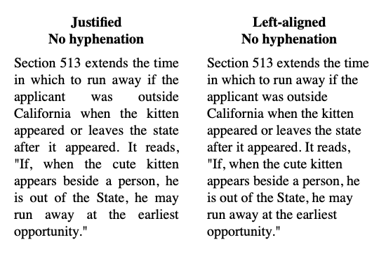
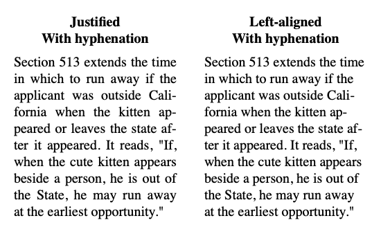

View on GitHub
View on GitHub
 Hyphenation Reference
Hyphenation Reference
Hyphenation
Efficient and flexible automatic hyphenation using the Knuth-Liang algorithm.
See full documentation at https://john-mueller.github.io/Hyphenation.
Table of Contents
Introduction
The primary purpose of this library is to automatically insert soft hyphens into text to improve its layout flow. Consider the following example from Butterick’s Practical Typography:

As line length decreases, justified text often displays large gaps between words, while left- or right-aligned text displays increasingly uneven margins. By inserting soft hyphens into words (which are only displayed when they fall at the end of a line), the text can be split more naturally across multiple lines, improving the text’s aesthetic appearance:

This proves useful in HTML (since the hyphens CSS property is not universally supported), and will even work in UIKit and SwiftUI text components.
Installation
Hyphenation is installed via the Swift Package Manager. First, add it to your dependencies:
let package = Package(
...
dependencies: [
.package(url: "https://github.com/john-mueller/Hyphenation.git", from: "0.2.0")
],
...
)
Then import the Hyphenation module wherever it is needed:
import Hyphenation
Usage
Basic usage just requires creating a Hyphenator instance and calling its hyphenate(text:) method:
let hyphenator = Hyphenator()
hyphenator.separator = "-"
let text = "This algorithm identifies likely hyphenation points."
print(hyphenator.hyphenate(text: text))
// This al-go-rithm iden-ti-fies like-ly hy-phen-ation points.
You can also remove the separator character from a string by calling unhyphenate(text:):
let hyphenatedText = "This al-go-rithm iden-ti-fies like-ly hy-phen-ation points."
print(hyphenator.unhyphenate(text: hyphenatedText))
// This algorithm identifies likely hyphenation points.
Note that if the original string contained the separator character, the unhyphenate(text:) method will remove those instances as well, so hyphenating and unhyphenating a string may not recover the original string.
Exceptions
The algorithm is designed to prioritize the prevention of incorrect hyphenations over finding every correct hyphenation—missing a single hyphenation rarely effects text flow meaningfully, but bad hyphenation can be rather noticable. Because the patterns were derived from a English dictionary, it can make good guesses about many words that do not appear in a dictionary.
let hyphenator = Hyphenator()
hyphenator.separator = "-"
print(hyphenator.hyphenate(text: "swiftlang supercalifragilisticexpialidocious"))
// swift-lang su-per-cal-ifrag-ilis-tic-ex-pi-ali-do-cious
Nevertheless, the algorithm may occasionally produce unexpected results for brand names or other unusual words. In this case, you may manually specify a desired hyphenation using exceptions.
print(hyphenator.hyphenate(text: "Microsoft sesquipedalian"))
// Mi-crosoft sesquipedalian
hyphenator.addCustomExceptions(["Micro-soft", "ses-qui-pe-da-li-an"])
print(hyphenator.hyphenate(text: "Microsoft sesquipedalian"))
// Micro-soft ses-qui-pe-da-li-an
To remove custom exceptions, use the following methods:
hyphenator.removeCustomExceptions(["sesquipedalian"])
hyphenator.removeAllCustomExceptions()
Customizable Properties
There are several properties you can modify to adjust how words are hyphenated.
The separator property sets the character inserted at hyphenation points. By default, this is U+00AD (soft hyphen).
The minLength, minLeading, and minTrailing properties adjust where the separator character may be inserted in a word.
- Words shorter than
minLengthwill not be hyphenated. - Hyphenation will not occur within the first
minLeadingcharacters. - Hyphenation will not occur within the last
minTrailingcharacters.
Custom Patterns
This library includes American English hyphenation patterns by default, but you can easily initialize a Hyphenator instance using patterns for many other languages. The patterns can be passed via String or URL:
let hyphenator1 = Hyphenator(patterns: patternsString, exceptions: exceptionsString)
let hyphenator2 = Hyphenator(patternFile: patternsURL, exceptions: exceptionsURL)
Patterns for a wide variety of languages can be found in the TeX hyphenation repo. Please check the license under which each set of patterns is released at the TeX hyphenation patterns website. This page also lists the proper minLeading and minTrailing for each language.
When initializing a new Hyphenator instance, it is assumed that patterns are separated by newlines or whitespace.
Thread Safety
The Hyphenator class is thread-safe, and can be used to hyphenate on multiple threads simultaneously (although the performance benefits over using two instances are negligible).
The copy() method provides an efficient way to create a new Hyphenator instance with the same properties and patterns as an existing instance.
HTML/Code
You should not apply the hyphenate(text:) method directly to strings containing HTML or code, as the code elements may be erroneously hyphenated. A safer approach is to use another tool capable of identifying HTML or code elements and applying hyphenation only to plain text content within the markup.
See HyphenationPublishPlugin for an example hyphenating HTML using SwiftSoup.
Contributing
If you encounter an issue using Hyphenation, please let me know by filing an issue or submitting a pull request!
When filing an issue, please do your best to provide reproducable steps and an explanation of the expected behavior.
In the case of a pull request, please take note of the following steps:
swiftlintshould produce no warnings when run in the project directory. This is checked by CI, but I also recommend linting locally if possible (instructions for installation in the SwiftLint repo).- Make sure
make testresults in no errors. This runs the tests in theCorrectnessTestsandThreadSafetyTestsfiles. - If changing any internal implementations, please run
make benchboth with and without your changes, to check for any speed regressions. This runs the tests in thePerformanceTestsfile.
License
Hyphenation is provided under the MIT license (see LICENSE.md).
The English hyphenation patterns are provided under the original custom license, and are sourced from the TeX hyphenation repo.
The texts used for performance testing are in the public domain, and are attributed in their headers.
The example paragraphs in the Introduction are from Butterick’s Practical Typography, and are used with permission.
Credits
This library was inspired by the pages on justified text and optional hyphens in Butterick’s Practical Typography and the author’s implementation in Racket. It’s worth a read!